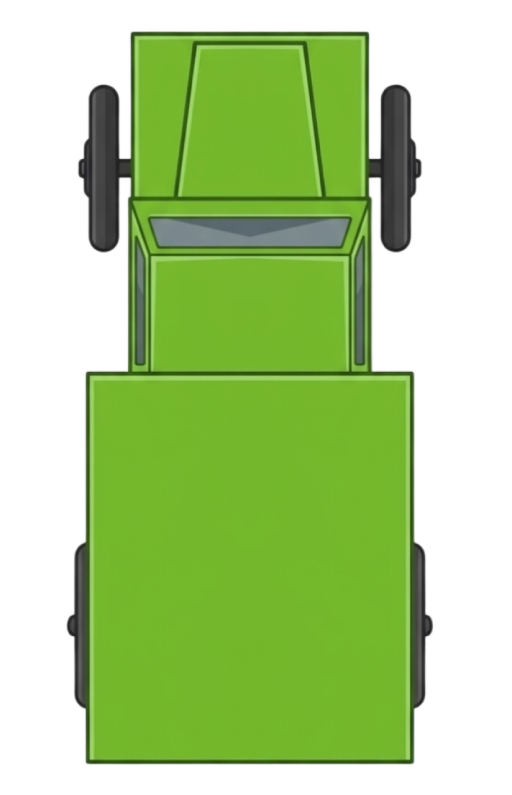
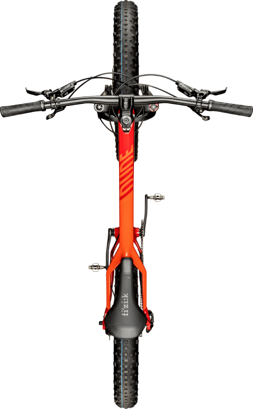
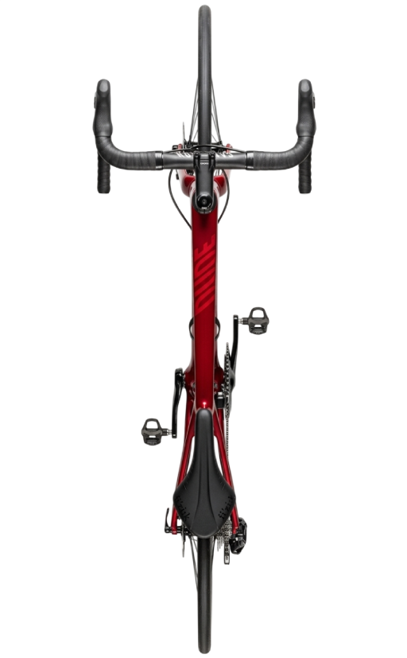
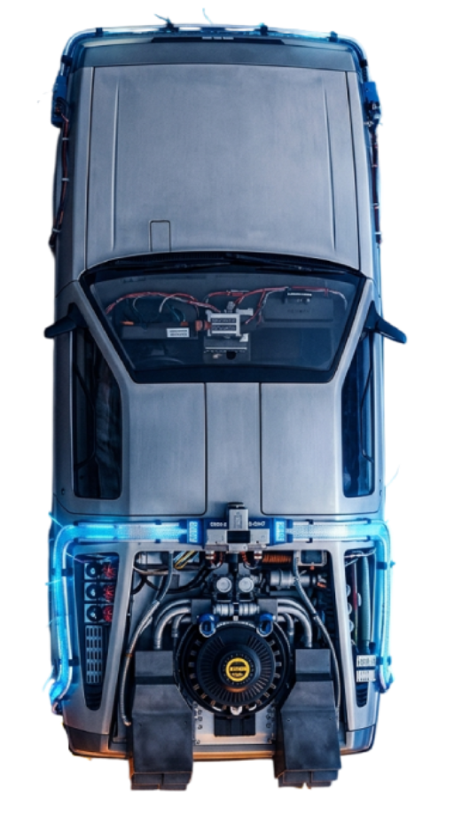

1. Choose a vehicle — Select your vehicle type. Each vehicle has its own icon and routing profile.
2. Set start & destination — Type locations in the search boxes or click on the map to add waypoints.
3. Choose routing profile — Select how you want to navigate (racing bike, MTB, car, walking, etc.).
4. Set dimensions — Enter your vehicle width and height to avoid narrow paths and low bridges.
5. Custom speed — Enter a speed to override the default. The animation will match your speed.
6. Alternative routes — After routing, compare alternatives at the bottom of the map.
7. Edit route — Drag any waypoint marker to reroute. Long-press a waypoint (mobile) or right-click (desktop) to remove it.
8. Start navigation — Hit the Navigate button to start the animated turn-by-turn guidance.
9. Views — Use Follow View (behind vehicle) or Drone View (rotating overhead).
All data is free! Map tiles from OpenStreetMap & ESRI, routing from BRouter, satellite imagery from ESRI World Imagery. No API keys needed.